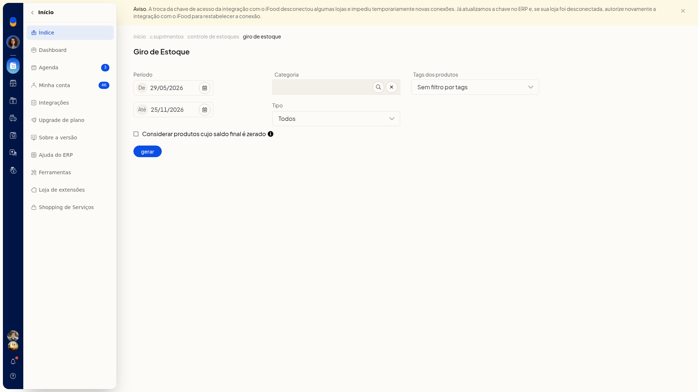

Giro de estoque
Instruções
-
Acesse Suprimentos > Giro de Estoque.
-
Em Período, informe De e Até no formato dia/mês/ano, como 01/06/2026 e 30/06/2026. Esses campos não são obrigatórios.

-
Se quiser restringir a análise, busque uma Categoria com os botões buscar e limpar.
-
Escolha o Tipo. A lista abre em Todos e também oferece Simples, Com variações, Fabricado e Matéria-prima.
-
Selecione as Tags dos produtos já cadastradas. O estado inicial é Sem filtro por tags.
-
Marque Considerar produtos cujo saldo final é zerado somente se quiser incluí-los na análise.
-
Clique em Gerar para gerar o giro com o período e os filtros informados.